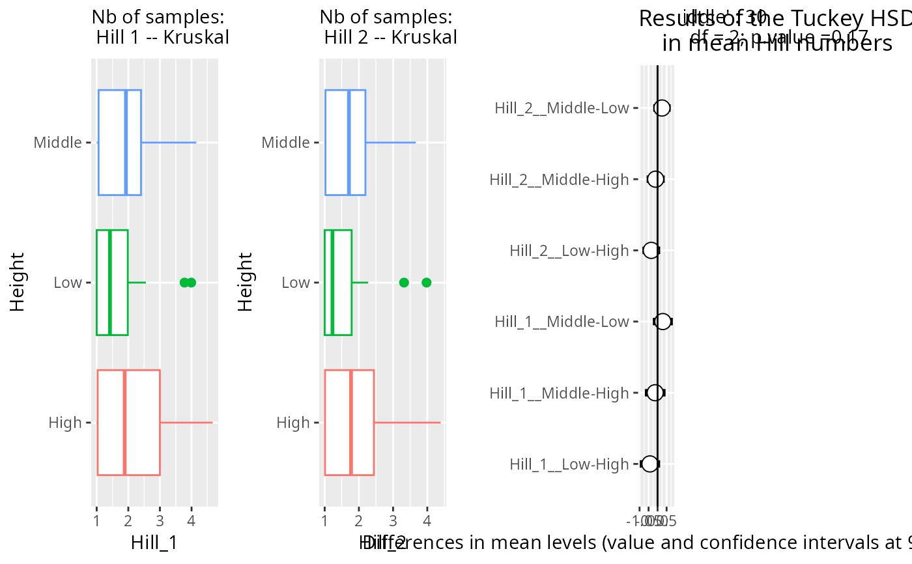

Graphical representation of hill number 0, 1 and 2 across a factor
Source:R/plot_functions.R
hill_pq.Rd
Hill numbers are the number of equiprobable species giving the same diversity value as the observed distribution. The Hill number 0 correspond to Species richness), the Hill number 1 to the exponential of Shannon Index and the Hill number 2 to the inverse of Simpson Index)
Note that (if correction_for_sample_size is TRUE, default behavior) this function use a sqrt of the read numbers in the linear model in order to correct for uneven sampling depth. This correction is only done before tuckey HSD plot and do not change the hill number computed.
Usage
hill_pq(
physeq,
fact = NULL,
variable = NULL,
hill_scales = c(0, 1, 2),
color_fac = NA,
letters = FALSE,
add_points = FALSE,
add_info = TRUE,
kruskal_test = TRUE,
one_plot = FALSE,
plot_with_tuckey = TRUE,
correction_for_sample_size = TRUE,
na_remove = TRUE,
vioplot = FALSE
)Arguments
- physeq
(required): a
phyloseq-classobject obtained using thephyloseqpackage.- fact
(required): The variable to test. Must be present in the
sam_dataslot of the physeq object.- variable
: Alias for factor. Kept only for backward compatibility.
- hill_scales
(a vector of integer) The list of q values to compute the hill number H^q. If Null, no hill number are computed. Default value compute the Hill number 0 (Species richness), the Hill number 1 (exponential of Shannon Index) and the Hill number 2 (inverse of Simpson Index).
- color_fac
(optional): The variable to color the barplot. For ex. same as fact. Not very useful because ggplot2 plot colors can be change using
scale_color_XXX()function.- letters
(optional, default FALSE): If set to TRUE, the plot show letters based on p-values for comparison. Use the
multcompLettersfunction from the package multcompLetters. BROKEN for the moment. Note that na values in The variable param need to be removed (see examples) to use letters.- add_points
(logical, default FALSE): add jitter point on boxplot
- add_info
(logical, default TRUE) Do we add a subtitle with information about the number of samples per modality ?
- kruskal_test
(logical, default TRUE) Do we test for global effect of our factor on each hill scales values? When kruskal_test is TRUE, the resulting test value are add in each plot in subtitle (unless add_info is FALSE). Moreover, if at least one hill scales is not significantly link to fact (pval>0.05), a message is prompt saying that Tuckey HSD plot is not informative for those Hill scales and letters are not printed.
- one_plot
(logical, default FALSE) If TRUE, return a unique plot with the four plot inside using the patchwork package. Note that if letters and one_plot are both TRUE, tuckey HSD results are discarded from the unique plot. In that case, use one_plot = FALSE to see the tuckey HSD results in the fourth plot of the resulting list.
- plot_with_tuckey
(logical, default TRUE). If one_plot is set to TRUE and letters to FALSE, allow to discard the tuckey plot part with plot_with_tuckey = FALSE
- correction_for_sample_size
(logical, default TRUE) This function use a sqrt of the read numbers in the linear model in order to correct for uneven sampling depth in the Tuckey TEST. This params do not change value of Hill number but only the test associated values (including the pvalues). To rarefy samples, you may use the function
phyloseq::rarefy_even_depth().- na_remove
(logical, default TRUE) Do we remove samples with NA in the factor fact ? Note that na_remove is always TRUE when using letters = TRUE
- vioplot
(logical, default FALSE) Do we plot violin plot instead of boxplot ?
Value
Either an unique ggplot2 object (if one_plot is TRUE) or a list of n+1 ggplot2 plot (with n the number of hill scale value). For example, with the default scale value:
plot_Hill_0 : the boxplot of Hill number 0 (= species richness) against the variable
plot_Hill_1 : the boxplot of Hill number 1 (= Shannon index) against the variable
plot_Hill_2 : the boxplot of Hill number 2 (= Simpson index) against the variable
plot_tuckey : plot the result of the Tuckey HSD test
Examples
p <- hill_pq(data_fungi_mini, "Height", hill_scales = 1:2)
#> 2 out of 2 Hill scales do not show any global trends with you factor Height. Tuckey HSD plot is not informative for those Hill scales. Letters are not printed for those Hill scales
p_h1 <- p[[1]] + theme(legend.position = "none")
p_h2 <- p[[2]] + theme(legend.position = "none")
multiplot(plotlist = list(p_h1, p_h2, p[[3]]), cols = 4)

# \donttest{
if (requireNamespace("multcompView")) {
p2 <- hill_pq(data_fungi, "Time",
correction_for_sample_size = FALSE,
letters = TRUE, add_points = TRUE,
plot_with_tuckey = FALSE
)
if (requireNamespace("patchwork")) {
patchwork::wrap_plots(p2, guides = "collect")
}
# Artificially modify data_fungi to force alpha-diversity effect
data_fungi_modif <- clean_pq(subset_samples_pq(data_fungi, !is.na(data_fungi@sam_data$Height)))
data_fungi_modif@otu_table[data_fungi_modif@sam_data$Height == "High", ] <-
data_fungi_modif@otu_table[data_fungi_modif@sam_data$Height == "High", ] +
sample(c(rep(0, ntaxa(data_fungi_modif) / 2), rep(100, ntaxa(data_fungi_modif) / 2)))
p3 <- hill_pq(data_fungi_modif, "Height",
letters = TRUE, vioplot = TRUE,
add_points = TRUE
)
}
#> Taxa are now in rows.
#> 2 out of 3 Hill scales do not show any global trends with you factor Time. Tuckey HSD plot is not informative for those Hill scales. Letters are not printed for those Hill scales
#> Cleaning suppress 144 taxa and 0 samples.
#> Taxa are now in rows.
# }